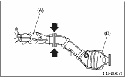

NOTE:
Use a new gasket.
The rear catalytic converter is integrated into the center exhaust pipe. Refer to “Center Exhaust Pipe” for installation procedures. 
1. Attach the rear catalytic converter (B) to the front catalytic converter (A).
Tightening torque:
35 N·m (3.6 kgf-m, 26.0 ft-lb)

2. Install the center exhaust pipe.